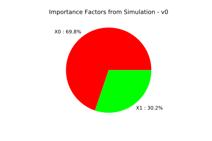
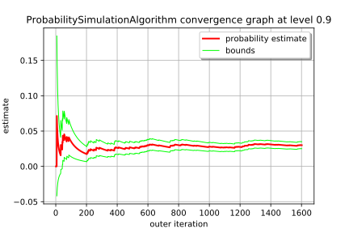

Exploitation of simulation algorithm results¶
In this basic example we are going to retrieve all the results proposed by probability simulation algorithms:
the probability estimate
the estimator variance
the confidence interval
the convergence graph of the estimator
the stored input and output numerical samples
importance factors
[24]:
from __future__ import print_function
import openturns as ot
[25]:
# create the joint distribution of the parameters
distribution_R = ot.LogNormalMuSigma(300.0, 30.0, 0.0).getDistribution()
distribution_F = ot.Normal(75e3, 5e3)
marginals = [distribution_R, distribution_F]
distribution = ot.ComposedDistribution(marginals)
[26]:
# create the model
model = ot.SymbolicFunction(['R', 'F'], ['R-F/(pi_*100.0)'])
[27]:
modelCallNumberBefore = model.getEvaluationCallsNumber()
modelGradientCallNumberBefore = model.getGradientCallsNumber()
modelHessianCallNumberBefore = model.getHessianCallsNumber()
[28]:
# To have access to the input and output samples
# after the simulation, activate the History mechanism
model = ot.MemoizeFunction(model)
# Remove all the values stored in the history mechanism
# Care : it is done regardless the status of the History mechanism
model.clearHistory()
[29]:
# create the event we want to estimate the probability
vect = ot.RandomVector(distribution)
G = ot.CompositeRandomVector(model, vect)
event = ot.Event(G, ot.Less(), 0.0)
[30]:
# create a Monte Carlo algorithm
experiment = ot.MonteCarloExperiment()
algo = ot.ProbabilitySimulationAlgorithm(event, experiment)
algo.setMaximumCoefficientOfVariation(0.1)
algo.setMaximumStandardDeviation(0.001)
algo.setMaximumOuterSampling(int(1e4))
[31]:
# Define the HistoryStrategy to store the values of $P_n$ and $\sigma_n$
# used ot draw the convergence graph
# Compact strategy : N points
N = 1000
algo.setConvergenceStrategy(ot.Compact(N))
algo.run()
[32]:
# retrieve result structure
result = algo.getResult()
[33]:
# Display the simulation event probability
result.getProbabilityEstimate()
[33]:
0.030265210608424305
[34]:
# Criteria 3 : Display the Standard Deviation of the estimator
result.getStandardDeviation()
[34]:
0.0030261072874587947
[35]:
# Display the variance of the simulation probability estimator
result.getVarianceEstimate()
[35]:
9.157325315211225e-06
[36]:
# Criteria 2 : Display the number of iterations of the simulation
result.getOuterSampling()
[36]:
3205
[37]:
# Display the total number of evaluations of the model
result.getOuterSampling() * result.getBlockSize()
[37]:
3205
[38]:
# Save the number of calls to the model, its gradient and hessian done so far
modelCallNumberAfter = model.getEvaluationCallsNumber()
modelGradientCallNumberAfter = model.getGradientCallsNumber()
modelHessianCallNumberAfter = model.getHessianCallsNumber()
# Display the number of iterations executed and
# the number of evaluations of the model
modelCallNumberAfter - modelCallNumberBefore
[38]:
3205
[39]:
# Get the mean point in event domain
# care : only for Monte Carlo and LHS sampling methods
result.getMeanPointInEventDomain()
[39]:
[247.667,81157.4]
[40]:
# Get the associated importance factors
# care : only for Monte Carlo and LHS sampling methods
result.getImportanceFactors()
[40]:
[X0 : 0.697926, X1 : 0.302074]
[41]:
result.drawImportanceFactors()
[41]:

[42]:
# Display the confidence interval length centered around the
# MonteCarlo probability MCProb
# IC = [Probability - 0.5*length, Probability + 0.5*length]
# level 0.95
probability = result.getProbabilityEstimate()
length95 = result.getConfidenceLength(0.95)
print("0.95 Confidence Interval length = ", length95)
print("IC at 0.95 = [", probability - 0.5*length95, "; ", probability + 0.5*length95, "]")
0.95 Confidence Interval length = 0.011862122593546867
IC at 0.95 = [ 0.02433414931165087 ; 0.03619627190519774 ]
[43]:
# Draw the convergence graph and the confidence interval of level alpha
# By default, alpha = 0.95
alpha = 0.90
algo.drawProbabilityConvergence(alpha)
[43]:

[44]:
# Get the numerical samples of the input and output random vectors
# stored according to the History Strategy specified
# and used to evaluate the probability estimator and its variance
inputSampleStored = model.getInputHistory()
outputSampleStored = model.getOutputHistory()
inputSampleStored
[44]:
| v0 | v1 | |
|---|---|---|
| 0 | 283.9439777411175 | 78982.4518341563 |
| 1 | 305.6793236305566 | 74983.52320553854 |
| 2 | 292.27664970486916 | 78322.88003818804 |
| ... | ||
| 3202 | 281.64463518169487 | 75644.60868478948 |
| 3203 | 336.3625865214464 | 68478.49690293457 |
| 3204 | 227.88205843595722 | 83787.99570911768 |
[45]:
# Get the values of the estimator and its variance
# stored according to the History Strategy specified
# and used to draw the convergence graph
estimator_probability_sample = algo.getConvergenceStrategy().getSample()[0]
estimator_variance_sample = algo.getConvergenceStrategy().getSample()[1]
print(estimator_probability_sample, estimator_variance_sample)
[0,-1] [0,-1]